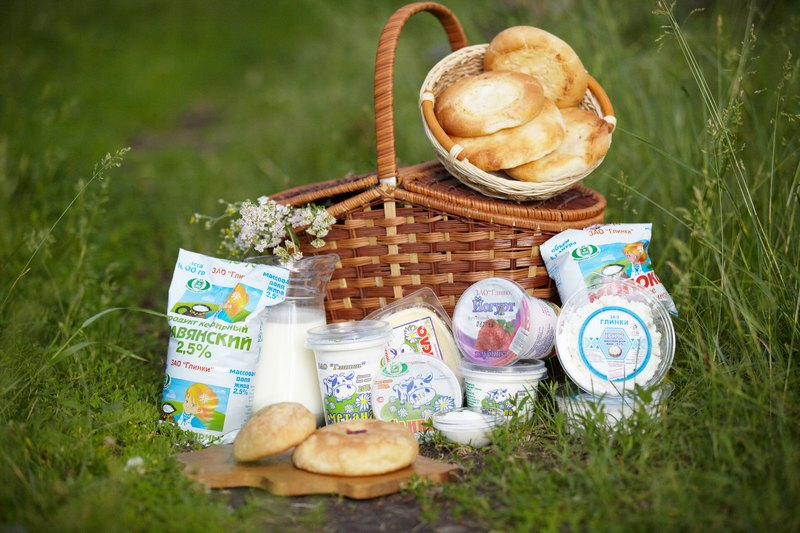
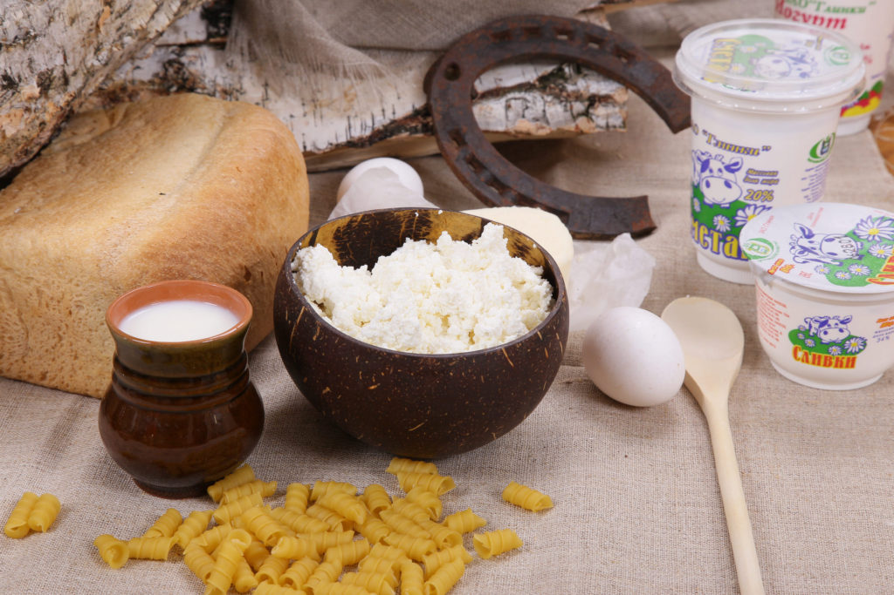

Закрытое акционерное общество «Глинки» — расположено в мкр. Глинки г. Кургана, образовано в 1999 году на базе бывшего совхоза «Заречный».
Предприятие имеет общую площадь сельскохозяйственных угодий 5995 га, в том числе 5825 га пашни и 124 га сенокосов и пастбищ.
Численность работающих составляет 169 человек, из них в отрасли животноводства 53 человека, предприятие полностью обеспечено кадрами специалистов и рабочих массовых профессий.
ЗАО «Глинки» — имеет статус племенного завода по разведению крупного рогатого скота черно — пестрой породы и племенного репродуктора по разведению крупного рогатого скота голштинской породы.
Основные направления работы хозяйства – получение и реализация племенных животных, производство молока и мяса.
Животноводство занимает 90% в обороте предприятия. По состоянию на 1 января 2017 года в хозяйстве содержалось 1093 головы крупного рогатого скота, в том числе 400 коров.
Стадо полностью оздоровлено от заболевания лейкозом крупно-рогатого скота, благополучно по другим заболеваниям скота. Методики оздоровления стада находят широкое применение в других сельскохозяйственных предприятиях области.
В 2016 году валовое производство молока составило 3650 тонн, надой на фуражную корову 9125 кг – самый высокий показатель в области. 8-е место из 222 плем. предприятий зоны Урала и Сибири. Валовой привес крупного рогатого скота составил 186 тонны, среднесуточный привес КРС — 805 граммов.
В последние годы предприятие активно занимается переработкой и реализацией собственной продукции. Имеется сертифицированное производство молочной продукции, хлебопекарных изделий, мясных полуфабрикатов.
Валовый надой молока в сутки составляет 11тн. и полностью перерабатывается на собственном мини-заводе.
Имеется собственная служба доставки, которая ежедневно с 4-00 утра доставляет свежую, натуральную молочную продукцию в больницы и заводы поступает свежая продукция в виде — цельного молока, творога, сметаны, сливок, кефира, йогурта. Молочные изделия производятся без консервантов, стабилизаторов и красителей, кефир и йогурты – исключительно на натуральных заквасках.
Вся продукция пользуется большим спросом у населения, ей присвоен информационный знак «Зауральское качество», а само предприятие служит примером для коллег по отрасли.
Для повышения генетического потенциала крупного рогатого скота ЗАО «Глинки» в 2006 году в рамках национального проекта «Развитие АПК» завезло 96 голов нетелей голштинской породы из Германии.
Предприятие ежегодно реализует племенной молодняк крупного рогатого скота в хозяйства области, а также за ее пределы. За последние 3 года реализовано более 90 голов племенных животных, на общую сумму 7655 тыс. рублей.
В предприятии налажена работа по племенному учету, постоянно совершенствуется технология производства продукции.
Ежегодно на базе хозяйства проводятся областные совещания, семинары по изучению и внедрению передовых ресурсосберегающих технологий в животноводстве.
Коллектив поставил перед собой высокую цель – производить самую качественную и натуральную продукцию. Поэтому ежегодно предприятие инвестирует собственные и кредитные ресурсы в обновление сельскохозяйственной техники и производственных помещений. За последнее время произведена реконструкция коровника, обновлено оборудование для содержания дойного стада, выполнено строительство телятника на 150 голов, приобретается техника и оборудование для ферм.
Сегодня ЗАО «Глинки» одно из самых экономически развитых и значимых сельхозпредприятий Курганской области.
Общая выручка от реализации продукции и услуг за 2016 год составила 173854 тыс. рублей, уровень рентабельности 13,1%, что позволяет хозяйству активно развиваться: приобретать современную технику и оборудование, проводить модернизацию животноводческих помещений, увеличивать заработную плату.
За 2016 год ЗАО «Глинки» получена прибыль (до налогообложения) в размере 31 млн. рублей. Рентабельность (с учетом бюджетных субсидий) составила 18,6 %. Получено бюджетных субсидий 18,1 млн. рублей.
Среднемесячная заработная плата одного работника составила 19918 рублей. Внесено в бюджеты всех уровней и внебюджетные фонды – 21,6 млн. рублей.
Деятельность ЗАО «Глинки» отмечена многими наградами. Среди них: почетная грамота Уральского научно-исследовательского института сельского хозяйства, диплом почета и серебряная медаль Всероссийской агропромышленной выставки молочной продукции, золотая медаль межрегиональной выставки, премия и кубок губернатора Курганской области, Трудовое переходящее знамя партии «Единая Россия», золотая медаль международного конкурса «Лучшие товары и услуги – ГЕММА»